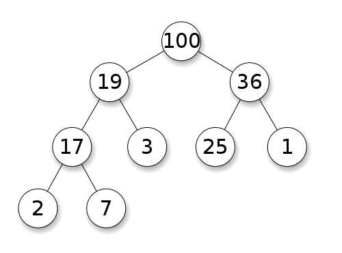
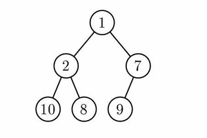
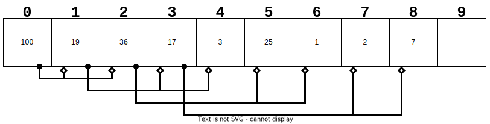

Heaps and HeapSort
📚 Drozdek (Ch. 6.9)
Heaps
A heap is a kind of (usually binary) tree. They normally* come in two varieties:
- Min-Heaps always maintain the smallest value at the root.
- Max-Heaps always maintain the largest value at the root.
Heaps
In order to be a Heap, the following properties must hold (a min heap is used as an example; for a max heap just reverse the comparison operator).
- The empty tree is a heap.
- A non-empty tree is a heap if and only if the heap property is satisfied for all nodes in the tree.
The Heap Property
The heap property, for any node in a tree, states:
- A node with no children satisfies the heap property.
- A node with one or more children satisfies the heap property if and only if:
(for a min-heap) The subtree rooted at node \(R\) is a min-heap if each of \(R\)’s child subtrees are min-heaps and the values of each of \(R\)’s direct descendants (if they exist) are greater than or equal to the value at \(R\).
(for a max-heap) The subtree rooted at node \(R\) is a max-heap if each of \(R\)’s child subtrees are max-heaps and the values of each of \(R\)’s direct descendants (if they exist) are less than or equal to the value at \(R\).
Binary Max Heap
Complete Binary Max Heap
Binary Min Heap
Complete Binary Min Heap
Heap Convention
It is convention (not strictly a requirement) that heaps “fill in” at the leaf level from left-to-right, as shown in the image below.
- All leaves are on the tree at level \(h\) or \(h-1\) where \(h\) is the tree height.
- The tree is balanced.
- Leaves are added at level \(h\) from left-to-right.
Complete Binary Max Heap
Heap Convention
It is convention (not strictly a requirement) that heaps “fill in” at the leaf level from left-to-right, as shown in the image below.
- All leaves are on the tree at level \(h\) or \(h-1\) where \(h\) is the tree height.
- The tree is balanced.
- Leaves are added at level \(h\) from left-to-right.

Heap Convention
This allows us to make an easy representation of a heap in an array, by applying the following rules:
- The first item in the array (index \(0\)) is the root.
- An item at any index \(i\) can find its left-child at index \(2i+1\) and its right-child at index \(2i+2\).
- By inverse relation, the parent of any node is at index \((i-1)/2\) using integer division.
Max Heap in Array
Inserting Into a Heap
When inserting a new item in an existing heap, the item must be placed into a leaf, then the heap property must be restored.
- Insert at leaf
- first “empty” location in the array
- Restore Heap
- “Percolate up”
Max Heap in Array
Removing From a Heap
We generally only care about removing the item at the root of the heap.
- Since the heap is an array, this would open a “hole” at the beginning.
- “shifting” the entire array left would be expensive.
- Instead, the value of the last leaf is moved up to the root position, and then the heap property must be restored.
- This re-heapify is a simple operation.
- Usually referred to as “sift-down”.
Max Heap in Array
Heapify
If an array can be represented as a tree, then it should be possible to convert any arbitrary array to a min or max heap. We call this operation heapify.
- How can we perform heapify?
- Top-down
- Bottom-up
Heapify
If an array can be represented as a tree, then it should be possible to convert any arbitrary array to a min or max heap. We call this operation heapify.
- How can we perform heapify?
- Top-down
- Construct the heap by using the algorithm for insertion into an empty heap. (Can be performed in-place.)
- Bottom-up
- Top-down
Heapify
If an array can be represented as a tree, then it should be possible to convert any arbitrary array to a min or max heap. We call this operation heapify.
- How can we perform heapify?
- Top-down
- Construct the heap by using the algorithm for insertion into an empty heap. (Can be performed in-place.)
- Bottom-up
- Construct the heap by first making heaps from all of the subtrees (beginning at the leaves) and working toward the root.
- Top-down
Uses for Heaps
- Priorty Queue
- More space-efficient VS a linked-list Pri. Queue.
- As the underlying data structure for Heapsort.
Heapsort
- First the array must be made into a heap by running heapify.
- Traditionally a max heap is used.
- Then, the sort proceeds by taking advantage of the partial ordering provided by the heap property. On each “pass”
- The maximum item is always at the top, so on each iteration, “remove” it by swapping it with the last element of the remaining heap.
- reduce the “size” of the heap by 1
- Restore the heap property by performing a sift-down from the root.
- The maximum item is always at the top, so on each iteration, “remove” it by swapping it with the last element of the remaining heap.
Heapsort Complexity
- Heapify (bottom-up) takes \(O(n)\) steps.
- (top-down) takes \(O(n\lg(n))\) steps.
- Each “pass” yields 1 value in the right place.
- \(n\) passes are required to sort all items.
- Sift-Down takes \(O(\lg(n))\) steps.
Heapsort Complexity
- Heapify (bottom-up) takes \(O(n)\) steps.
- (top-down) takes \(O(n\lg(n))\) steps.
- (done once)
- (top-down) takes \(O(n\lg(n))\) steps.
- Each “pass” yields 1 value in the right place.
- \(n\) passes are required to sort all items.
- Sift-Down takes \(O(\lg(n))\) steps.
- Overall: \(O(n\lg(n))\)

Heaps and HeapSort

CS 50x2 Accelerated Programming Series